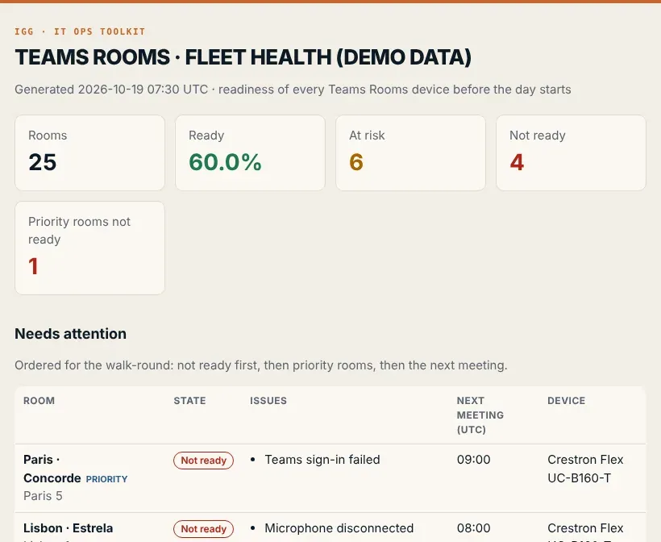

The boardroom with a meeting in 30 minutes goes to the top of the list, the small room that is free all day goes to the bottom, and each problem comes with the first thing to try. That is the order the Teams Rooms morning check published with this post gives the on-site engineer at 08:00. Its demo is a made-up company with 25 devices in three offices and faults placed on purpose.
The Teams admin center shows the health of every room, one device at a time. The tool instead reads all devices and their health from Microsoft Graph, Microsoft's API for its cloud services, with a read-only PowerShell script that queries /teamwork/devices.
Three states: not ready, at risk or ready
A room is Not ready when it is offline, Teams sign-in has failed, or the camera, microphone, speaker or main display is down. It is At risk with no calendar on the console, a stale heartbeat, outdated software, or a second display or HDMI ingest down. Otherwise it is Ready.
Firmware drift and devices missing from the register
morning_check.md sorts rooms by state, priority and next meeting. The tool also writes report.html, actions.csv with serial numbers for the ticket, a daily trend, and a housekeeping list of firmware that drifted from the rest of the model and devices nobody added to the room register. It runs on Python's standard library, with 14 tests and a short runbook.
How to use it with real data
Run the PowerShell export against the tenant (the /teamwork/devices API is in Graph beta), fill in the room register with the rooms and their priority, and run it every morning before the first meetings.
Where it comes from
What I learned building it: most of the value is in the order of the list, not in the detection. And an offline console should show one issue, not five, because everything else about it is noise until it is back.
Want to bring it to your environment or adapt it to your case? Get in touch and we can look at it together.
Tech Career Lab · newsletter
Found this useful? Every two weeks I send one practical idea for IT professionals: LinkedIn, projects, networking and hiring processes.
Sign up and get the 33 ideas →